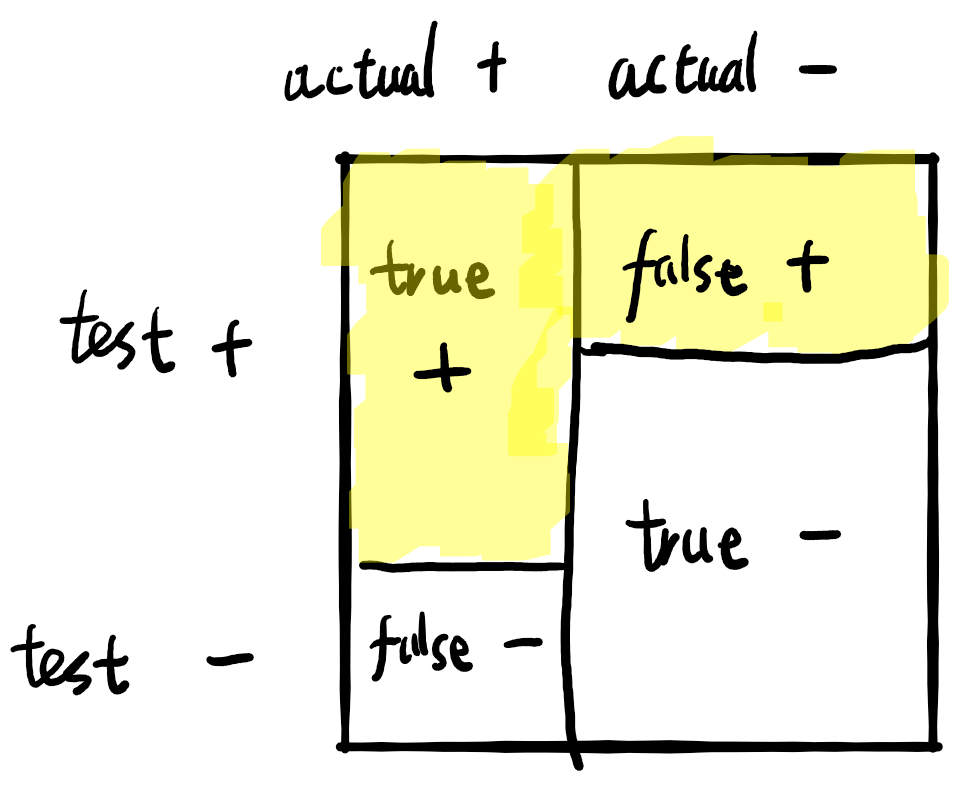

In discussions of algorithm bias, the COMPAS incident of 2016 has been too often quoted out of context. This post gives the facts, and the interpretation, as quickly as possible. See this for details.
The fight
The COMPAS system is a statistical decision algorithm trained on past statistical data on American convicts. It takes as inputs features about the convict and outputs a “risk score” that indicates how likely the convict would reoffend if released.
The basic paradox at the heart of the contention is very simple and is not a simple “machines are biased because it learns from history and history is biased”. It’s just that there are many kinds of fairness, each may sound reasonable, but they are not compatible in realistic circumstances. Northpointe chose one and ProPublica chose another.
The math
The actual COMPAS gives a risk score from 1-10, but the phenomenon is clearer when there are only two possibilities instead of 10.
Consider the toy example where we have a decider (COMPAS, a jury, or a judge) judging whether a group of convicts would reoffend or not. How well the decider is doing can be measured in at least three ways:
A good decider should have false negative rate close to 0, false positive rate close to 0, and calibration close to 1.
Visually, we can draw a “square” with four blocks:

a square with 4 blocks
false negative rate = the “height” of the false negative block,
false positive rate = the “height” of the false positive block,
calibration = (true positive block)/(total area of the yellow blocks)
Now consider black convicts and white convicts. Now we have two squares. Since they have different reoffend rates for some reason, the central vertical line of the two squares are different.
two squares, one for White, one for Black
The decider tries to be fair by making sure that the false negative rate and false positive rates are the same in both squares, but then it will be forced to make the calibration in the Whites lower than the calibration in the Blacks.
Then suppose the decider try to increase the calibration in the Whites, then the decider must somehow decrease the false negative rate of Whites, or the false positive rate of Whites.
In other words, when the base rates are different, it’s impossible to have equal fairness measures in:
false negative rate
false positive rate
calibration
One more thing: Even when base rates are different, there’s a way to have equal fairness measures in all three of those, but it requires the decider to be perfect: Its false positive rate and false negative rate must both be 0, and its calibration must also be 1.
Interactive demonstration
The following is an interactive diagram demonstrating the problem. The bars in the squares are draggable. You will find that there is no way to equate all three numbers (true positive rate, true negative rate, calibration), unless you change the vertical bar.
A slight generalization
In the jargon of fairness measurement, “equal false negative rate and false positive rate” is “parity fairness”; “equal calibration” is just “calibration fairness”. Parity fairness and calibration fairness can be straightforwardly generalized for COMPAS, which uses a 1-10 scoring scale, or indeed any numerical risk score.
By routine algebra, in this general case, parity fairness and calibration fairness are incompatible when the base rates are different, and the decider is not perfect. See (Kleinberg, Mullainathan, and Raghavan 2016) for this general case, a literature review, and other real-life occurrences.
The fight, after-math
Northpointe showed that COMPAS is approximately fair in calibration for Whites and Blacks. ProPublica showed that COMPAS is unfair in parity.
The lesson is that there are incompatible fairnesses. To figure out which to apply – that is a different question.
I wrote the essay in 2019, during my undergraduate research on risk measures. From the vantage point of 2024, it certainly feels like algorithmic fairness has lost much of the hotness. Instead of the monthly outrages about how Google’s image algorithm identified some black people as “gorillas” (2015), or the COMPASS bail algorithm (2016), now algorithmic fairness is handled by a separate team, right beside the public relations team, the load balancing team, the fiber optics team, and the data wrangling team.
The point being, algorithmic fairness has left the realm of philosophical and political debates and entered the realm of bureaucracy. Fairness is no longer the key to the meaning of life and self-worth, but a matter of passing statistical tests.
References
Kleinberg, Jon, Sendhil Mullainathan, and Manish Raghavan. 2016. “Inherent Trade-Offs in the Fair Determination of Risk Scores.” arXiv. https://doi.org/10.48550/arXiv.1609.05807.
Source Code
---title: "The Racial Algorithmic Bias Controversy"author: "Yuxi Liu"date: "2019-07-13"date-modified: "2024-01-10"categories: [probability, statistics]format: html: toc: truedescription: "The racial algorithmic bias controversy, as seen by a mathematician."image: "figure/square_with_4_blocks.png"status: "finished"confidence: "certain"importance: 3---<small>Originally published as [*No nonsense version of the "racial algorithm bias"* — LessWrong](https://www.lesswrong.com/posts/ouQNu3hhfKLBRuwR7/no-nonsense-version-of-the-racial-algorithm-bias).</small>In discussions of algorithm bias, the COMPAS incident of 2016 has been too often quoted out of context. This post gives the facts, and the interpretation, as quickly as possible. See [this](https://web.archive.org/web/20161017154019/https://www.washingtonpost.com/news/monkey-cage/wp/2016/10/17/can-an-algorithm-be-racist-our-analysis-is-more-cautious-than-propublicas/) for details.## The fightThe COMPAS system is a statistical decision algorithm trained on past statistical data on American convicts. It takes as inputs features about the convict and outputs a "risk score" that indicates how likely the convict would reoffend if released.In 2016, ProPublica organization [claimed that COMPAS is clearly unfair for blacks in one way](https://www.propublica.org/article/machine-bias-risk-assessments-in-criminal-sentencing). Northpointe [replied that it is approximately fair in another way](https://www.equivant.com/response-to-propublica-demonstrating-accuracy-equity-and-predictive-parity/). ProPublica [rebukes with many statistical details](https://www.propublica.org/article/technical-response-to-northpointe) that I didn't read.The basic paradox at the heart of the contention is very simple and is not a simple "machines are biased because it learns from history and history is biased". It's just that there are many kinds of fairness, each may sound reasonable, but they are not compatible in realistic circumstances. Northpointe chose one and ProPublica chose another. ## The mathThe actual COMPAS gives a risk score from 1-10, but the phenomenon is clearer when there are only two possibilities instead of 10.Consider the toy example where we have a decider (COMPAS, a jury, or a judge) judging whether a group of convicts would reoffend or not. How well the decider is doing can be measured in at least three ways:* False negative rate = (false negative)/(actual positive)* False positive rate = (false positive)/(actual negative)* Calibration = (true positive)/(test positive)A good decider should have false negative rate close to 0, false positive rate close to 0, and calibration close to 1.Visually, we can draw a "square" with four blocks:* false negative rate = the "height" of the false negative block, * false positive rate = the "height" of the false positive block, * calibration = (true positive block)/(total area of the yellow blocks) Now consider black convicts and white convicts. Now we have two squares. Since they have different reoffend rates for some reason, the central vertical line of the two squares are different. The decider tries to be fair by making sure that the false negative rate and false positive rates are the same in both squares, but then it will be forced to make the calibration in the Whites lower than the calibration in the Blacks.Then suppose the decider try to increase the calibration in the Whites, then the decider must somehow decrease the false negative rate of Whites, or the false positive rate of Whites. In other words, when the base rates are different, it's impossible to have equal fairness measures in:* false negative rate* false positive rate* calibrationOne more thing: Even when base rates are different, there's a way to have equal fairness measures in all three of those, but it requires the decider to be *perfect*: Its false positive rate and false negative rate must both be 0, and its calibration must also be 1.### Interactive demonstrationThe following is an interactive diagram demonstrating the problem. The bars in the squares are draggable. You will find that there is no way to equate all three numbers (true positive rate, true negative rate, calibration), unless you change the vertical bar.```{=html}<div style="background-color: #FFFFFF;" id="svg-container-white"></div><div style="background-color: #FFFFFF;" id="svg-container-black"></div>```### A slight generalizationIn the jargon of fairness measurement, "equal false negative rate and false positive rate" is "parity fairness"; "equal calibration" is just "calibration fairness". Parity fairness and calibration fairness can be straightforwardly generalized for COMPAS, which uses a 1-10 scoring scale, or indeed any numerical risk score.By routine algebra, in this general case, parity fairness and calibration fairness are incompatible when the base rates are different, and the decider is not perfect. See [@kleinbergInherentTradeOffsFair2016] for this general case, a literature review, and other real-life occurrences.## The fight, after-mathNorthpointe showed that COMPAS is approximately fair in calibration for Whites and Blacks. ProPublica showed that COMPAS is unfair in parity.The lesson is that there are incompatible fairnesses. To figure out which to apply -- that is a different question.I wrote the essay in 2019, during my [undergraduate research on risk measures](https://yuxi-liu-wired.github.io/notes/#undergraduate-thesis). From the vantage point of 2024, it certainly feels like algorithmic fairness has lost much of the hotness. Instead of the monthly outrages about how [Google's image algorithm identified some black people as "gorillas" (2015)](https://web.archive.org/web/20230522090617/https://www.nytimes.com/2023/05/22/technology/ai-photo-labels-google-apple.html), or the COMPASS bail algorithm (2016), now algorithmic fairness is handled by a separate team, right beside the public relations team, the load balancing team, the fiber optics team, and the data wrangling team.The point being, algorithmic fairness has left the realm of philosophical and political debates and entered the realm of bureaucracy. Fairness is no longer the key to the meaning of life and self-worth, but a matter of passing statistical tests.```{=html}<script src="static/d3.min.js"></script><script> function squareSVG(p_innocent_input, p_true_innocent_input, p_false_innocent_input, id) { // SVG setup let p_innocent = p_innocent_input; let p_true_innocent = p_true_innocent_input; let p_false_innocent = p_false_innocent_input; const width = 300; // Width of the SVG const height = 300; // Height of the SVG const svg = d3.select(id).append('svg') .attr('width', width * 2) .attr('height', height + 40) .attr("viewBox", `-150 -40 600 380`) .style("border", "0px solid black"); let textElement = svg.append("text") .attr("x", 150) // Center the text .attr("y", height + 20) // Position below the square .attr("text-anchor", "middle") // Center the text horizontally .text(``); svg.append("text").attr("x", -10).attr("y", 40).attr("text-anchor", "end").text(`judged positive`); svg.append("text").attr("x", -10).attr("y", 280).attr("text-anchor", "end").text(`judged negative`); svg.append("text").attr("x", 20).attr("y", -10).attr("text-anchor", "start").text(`actually positive`); svg.append("text").attr("x", 300).attr("y", -10).attr("text-anchor", "end").text(`actually negative`); const colorTopLeft = "#ABD2FA"; const colorTopRight = "#3D518C"; const colorBottomLeft = "#7692FF"; const colorBottomRight = "#091540"; // Append the colored rectangles before the lines so they are drawn underneath let regionTopLeft = svg.append("rect") .attr("fill", colorTopLeft); let regionTopRight = svg.append("rect") .attr("fill", colorTopRight); let regionBottomLeft = svg.append("rect") .attr("fill", colorBottomLeft); let regionBottomRight = svg.append("rect") .attr("fill", colorBottomRight); // Draw the square svg.append("rect") .attr("width", width) .attr("height", height) .attr("fill", "none") .attr("stroke", "none"); let linecolor = "#A31621" let trueInnocentLine = svg.append("line") .attr("stroke", linecolor) .attr("stroke-width", 10) .attr("x1", 0) .attr("x2", p_innocent * width) // x2 should depend on p_innocent .attr("y1", p_true_innocent * height) .attr("y2", p_true_innocent * height); let falseInnocentLine = svg.append("line") .attr("stroke", linecolor) .attr("stroke-width", 10) .attr("x1", p_innocent * width) // x1 should depend on p_innocent .attr("x2", width) .attr("y1", p_false_innocent * height) .attr("y2", p_false_innocent * height); let verticalLine = svg.append("line") .attr("stroke", linecolor) .attr("stroke-width", 10) .attr("x1", p_innocent * width) .attr("x2", p_innocent * width) .attr("y1", 0) .attr("y2", height); // Define drag behavior let drag = d3.drag().on("drag", function (event, d) { // Determine which line is being dragged if (d === p_innocent) { p_innocent = Math.min(Math.max(event.x / width, 0), 1); } else if (d === p_true_innocent) { p_true_innocent = Math.min(Math.max(event.y / height, 0), 1); } else if (d === p_false_innocent) { p_false_innocent = Math.min(Math.max(event.y / height, 0), 1); } update(); // Update lines based on the new values }); // Drag behavior for the vertical line function dragVerticalLine(event) { p_innocent = Math.min(Math.max(event.x / width, 0), 1); update(); } // Drag behavior for the true innocent line function dragTrueInnocentLine(event) { p_true_innocent = Math.min(Math.max(event.y / height, 0), 1); update(); } // Drag behavior for the false innocent line function dragFalseInnocentLine(event) { p_false_innocent = Math.min(Math.max(event.y / height, 0), 1); update(); } // Apply the drag behavior verticalLine.call(d3.drag().on('drag', dragVerticalLine)); trueInnocentLine.call(d3.drag().on('drag', dragTrueInnocentLine)); falseInnocentLine.call(d3.drag().on('drag', dragFalseInnocentLine)); // Function to update line positions function update() { verticalLine.attr("x1", p_innocent * width) .attr("x2", p_innocent * width); trueInnocentLine.attr("x2", p_innocent * width) .attr("y1", p_true_innocent * height) .attr("y2", p_true_innocent * height); falseInnocentLine.attr("x1", p_innocent * width) .attr("y1", p_false_innocent * height) .attr("y2", p_false_innocent * height); regionTopLeft.attr("x", 0) .attr("y", 0) .attr("width", p_innocent * width) .attr("height", p_true_innocent * height); regionTopRight.attr("x", p_innocent * width) .attr("y", 0) .attr("width", width - p_innocent * width) .attr("height", p_false_innocent * height); regionBottomLeft.attr("x", 0) .attr("y", p_true_innocent * height) .attr("width", p_innocent * width) .attr("height", height - p_true_innocent * height); regionBottomRight.attr("x", p_innocent * width) .attr("y", p_false_innocent * height) .attr("width", width - p_innocent * width) .attr("height", height - p_false_innocent * height); textElement.text(`true positive rate = ${p_true_innocent.toFixed(2)}, true negative rate = ${(1 - p_false_innocent).toFixed(2)}, calibration = ${((p_true_innocent * p_innocent) / (p_true_innocent * p_innocent + p_false_innocent * (1 - p_innocent))).toFixed(2)}`); } update(); // Initial update of lines return svg.node(); } squareSVG(0.6, 0.8, 0.2, "#svg-container-white"); squareSVG(0.4, 0.8, 0.2, "#svg-container-black");</script>```